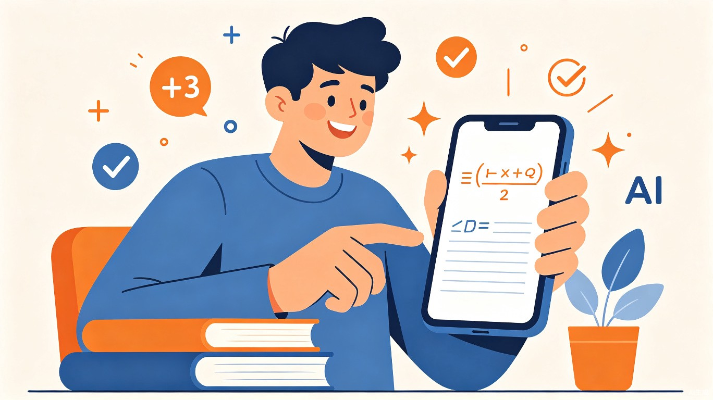
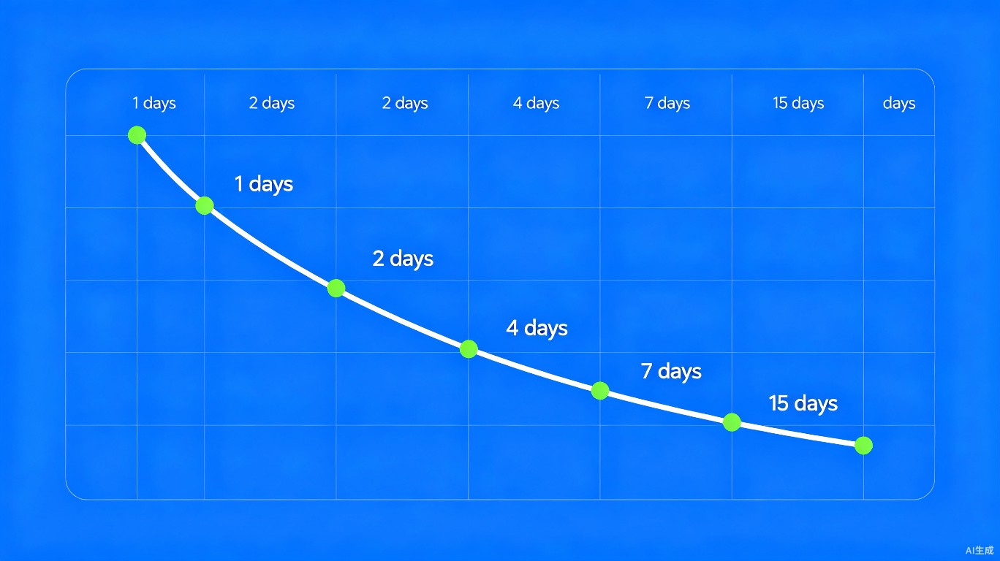
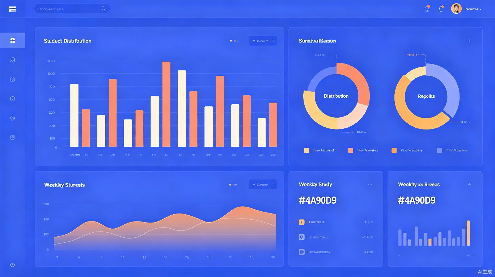
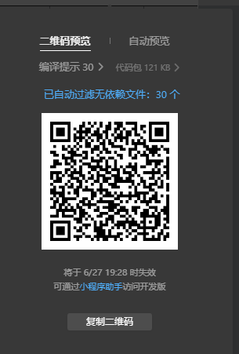
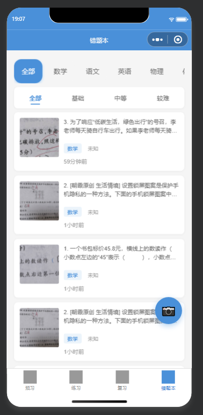
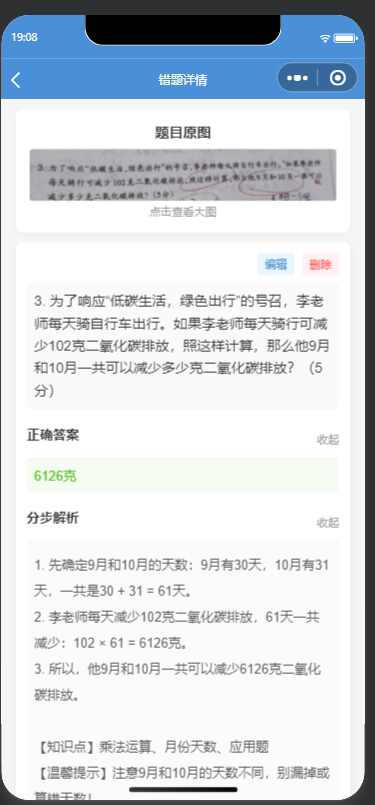
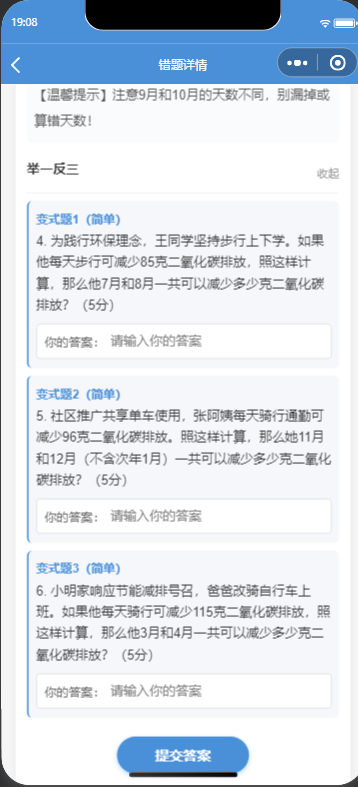
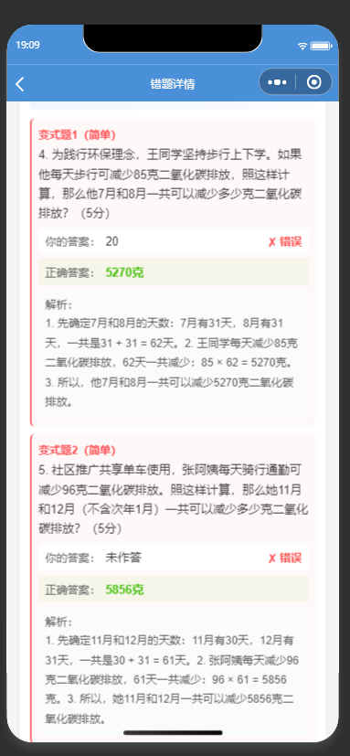
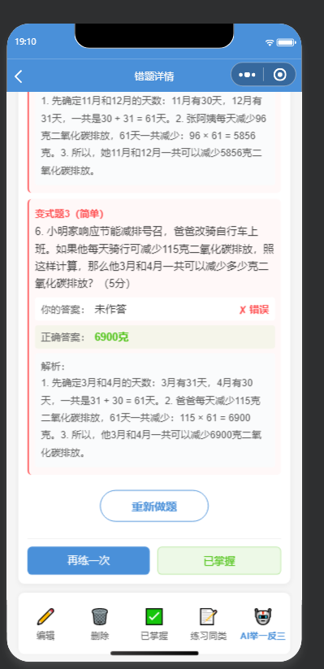

错题整理助手
AI驱动的智能学习工具
面向中小学生的智能错题管理小程序，融合AI多模态识别、智能解题与艾宾浩斯遗忘曲线，让每一道错题都成为进步的阶梯。

项目概述
一个完整的AI学习闭环，从错题录入到科学复习，覆盖学习的全链路
AI 拍照解题
拍照即录，通义千问VL多模态大模型自动识别题目并生成答案、解析与知识点标注
举一反三
基于错题智能生成3道变式题，支持图形题理解，互动式做题并智能比对答案
科学复习
基于艾宾浩斯遗忘曲线自动安排复习计划，动态调整间隔与掌握度
💡 项目定位
错题整理助手是一款面向K12学生的微信小程序，旨在解决学生"错题整理难、复习无章法、做题效率低"三大核心痛点。通过AI多模态技术实现拍照即解，结合认知科学的艾宾浩斯遗忘曲线进行科学复习规划，打造"录入 → 解题 → 练习 → 复习 → 分析"的完整学习闭环。
痛点与解决方案
深入分析传统错题管理方式的核心问题，以及我们的创新应对
- 手抄错题耗时费力，学生不愿坚持
- 错题本杂乱无章，缺乏学科分类和难度标记
- 无法快速定位薄弱知识点，复习无针对性
- 仅被动记录，缺乏主动练习和巩固机制
- 复习间隔无科学依据，遗忘后再学效率低
- 缺乏学习数据统计，无法量化进步
- AI拍照自动识别，3秒完成错题录入
- 5大学科 × 3级难度 × 知识点智能标注
- 学情分析看板，薄弱知识点TOP5一目了然
- 举一反三变式题，每道错题自动生成3道练习
- 艾宾浩斯曲线复习，间隔1/2/4/7/15/30天
- 完整数据仪表盘，掌握率/连续复习/趋势分析
核心功能展示
四大核心模块构建完整学习闭环
拍照录入
AI看图解题
举一反三
变式题练习
智能组卷
薄弱点强化
科学复习
遗忘曲线
学情分析
数据驱动
错题录入 — 拍照即解
全新的V2两步录入流程，拍照后AI自动识别题目内容、生成标准答案、解题思路和知识点标注，无需手动输入任何文字。
- 通义千问VL多模态大模型，支持文字题和图形题
- 自动生成题目、答案、解析、知识点、解题提示
- 一键标记学科、章节、难度和错误原因
- 图片自动压缩上传云存储，节省空间
AI举一反三 — 变式练习
基于每道错题，AI自动生成3道同类型变式题，让学生在相似场景中反复练习，真正吃透知识点。
- 支持文字题和图形题的变式生成
- 互动式做题流程：先做题，再看答案和解析
- 智能答案比对：完全匹配、选择题去括号、数值比较
- 练习结果自动反馈到掌握度系统
科学复习 — 艾宾浩斯遗忘曲线
基于认知科学的艾宾浩斯遗忘曲线，系统自动计算最佳复习时间，确保学生在记忆衰减前及时巩固。
- 动态间隔：1 → 2 → 4 → 7 → 15 → 30天渐进式复习
- 掌握度分级：掌握(+3) / 部分掌握(+1) / 遗忘(-2)
- 连续复习天数统计，建立学习习惯
- 今日待复习卡片列表，一目了然

学情分析 — 数据驱动学习
多维度的学习数据可视化分析，帮助学生和家长全面了解学习状态，精准定位薄弱环节。
- 总体统计：错题总数、已掌握数、掌握率
- 学科分布条形图，快速发现弱势学科
- 近7天复习趋势柱状图，追踪学习节奏
- 薄弱知识点TOP5，精准攻克学习盲区

预习系统 — 知识点先行
系统化的知识点浏览与预习功能，帮助学生在上课前对知识点建立初步认知，提升课堂学习效率。
- 年级 + 学科选择，手风琴式章节列表
- 知识点状态标记：已预习 / 未预习 / 有错题
- 概念讲解(rich-text)、典型例题(可折叠)、易错点提示
- 预习笔记本地存储，标记不理解的内容
技术架构
微信原生小程序 + 云开发 + AI大模型的全栈架构
系统架构图
flowchart TB
subgraph Client["小程序前端"]
Pages["4个Tab · 12个页面"]
Components["5个自定义组件"]
Utils["4个工具模块"]
Data["静态知识点数据"]
end
subgraph Cloud["微信云开发"]
CF1["aiSolveService
AI解题 · 变式题生成"]
CF2["mistakeService
错题CRUD管理"]
CF3["exerciseService
智能组卷 · 批改"]
CF4["reviewService
复习计划 · 统计"]
CF5["ocrService
OCR文字识别"]
CF6["userService
用户管理"]
DB[("云数据库
6个集合")]
Storage[("云存储
错题图片")]
end
subgraph AI["AI服务层"]
Qwen["通义千问VL
多模态解题"]
QwenText["通义千问
文本解题"]
DeepSeek["DeepSeek
降级备用"]
end
Pages --> CF1
Pages --> CF2
Pages --> CF3
Pages --> CF4
Pages --> CF5
Pages --> CF6
CF1 --> Qwen
CF1 --> QwenText
CF1 --> DeepSeek
CF5 --> OCR_Tencent["腾讯云OCR"]
CF2 --> DB
CF3 --> DB
CF4 --> DB
CF6 --> DB
CF1 --> Storage
前端技术
云端服务
AI 能力
数据与算法
7个云函数服务
创新亮点
技术与教育深度融合的5大创新突破
多模态AI直接看图解题
突破传统OCR + NLP两步方案，直接使用通义千问VL多模态大模型理解题目图片，一步完成题目识别与解题，大幅提升准确率和速度。对于含图形、表格的数学题尤其有优势。
AI驱动的变式题生成
不仅告诉学生正确答案，还能基于错题自动生成3道同类型但数据/场景不同的变式题，配合互动做题流程和智能答案比对，实现真正的"举一反三"。
认知科学驱动的复习系统
基于艾宾浩斯遗忘曲线的简化模型，动态计算复习间隔（1/2/4/7/15/30天），结合掌握度反馈（掌握/部分/遗忘）自动调整计划，确保每一道错题在最恰当的时机被复习。
智能组卷与薄弱点分析
系统自动分析学生的薄弱知识点（按掌握度升序），从错题库中智能选题生成练习卷。学情分析看板提供多维度数据可视化，帮助学生和家长精准定位学习短板。
Serverless全托管架构
基于微信云开发的Serverless架构，零运维成本。前端自定义组件 + 工具模块的工程化设计，实现高复用性和可维护性。本地缓存管理器支持TTL过期和LRU策略，保证离线体验流畅。
应用场景
覆盖课前、课中、课后的完整学习场景
课前预习
浏览知识点目录，查看概念讲解和典型例题，标注不理解的内容，带着问题进课堂。
课后错题录入
考试或作业后，拍照录入做错的题目，AI自动解题并标注知识点，建立个人错题库。
考前强化练习
系统自动从薄弱知识点选题组卷，配合举一反三变式题，针对性突破薄弱环节。
学情追踪
查看掌握率趋势、学科分布、薄弱知识点排名，量化学习进步，家长也可了解学习情况。
关键步骤截图
小程序核心功能操作流程的真实截图

体验入口
微信开发者工具预览二维码，扫码即可体验小程序

错题本列表
学科×难度双维度筛选，卡片式错题列表，悬浮拍照按钮

AI解题详情
题目原图、AI自动生成的正确答案、分步解析、知识点标签

举一反三做题
AI基于错题生成3道变式题，互动式输入答案并提交

答案对比与解析
智能比对答案，红色标记错误，绿色显示正确答案和分步解析

掌握度管理
重新做题、再练一次、标记已掌握，底部操作栏一键管理
6a3fa820056235c7033a06dd